【评】ef - a tale of memories [0]
本文章包含大量多媒体资源，虽然本站已开启懒加载，但仍可能会导致加载缓慢或使用大量数据流量。
本文章包含某作品的具体内容，若您从未观赏过被剧透的作品内容，继续阅读可能会严重破坏您的观赏体验。
忘れたくない思い、ありますか？
你有不想忘却的回忆吗？
回忆。
不愿面对的回忆。
不愿忘却的回忆。
无法忘却的回忆。
回忆。
难以割舍的回忆。
痛彻心扉的回忆。
人从现实获取感知，感知在脑海留下痕迹。我们从痕迹中确定对这个世界的认知，确定人与人之间的联系，确定自己在世界中的位置。对痕迹的重新唤起，成为回忆。人们在回忆中拾得确定感，在回忆中渲染往昔的美好时光，依靠回忆锚定飘忽不定的自己。
当新的感知与回忆相矛盾时，人必须要做出痛苦的抉择：究竟是掊碎习以为常的回忆，还是拒绝承认既成的现实。象征着舒适和美好的回忆成为了痛苦最强烈的源泉，依靠回忆锚定的生活与现实，则不可挽回地走向解构与离析。仅有一点能够如灯塔一般稳定地漂浮在混乱的认知之海上，却指向不可拒斥的航向：任何选择都意味着舍弃。
且必须舍弃。
当回忆逐渐消陨于时间的迷雾，人的自我也将逐渐失去锚点。失去痕迹的记录就是失去联系，失去自我意义。与感知和回忆的矛盾不同，回忆的消减，将建立于过往的联系和意义连根刨出丢入虚空，虽然不会造成即时且剧烈的痛苦，但是它会一步一步销蚀确定感，留下一地的空虚，连选择的机会也不剩下。
面对回忆与现实的激烈冲突，面对回忆不可避免的模糊，我们能做些什么，来挽救逐渐崩解、逐渐陷入虚无的意义？
“你有不想忘却的回忆吗？”
《ef - a tale of memories》动画逐帧评测系列：零
序言
“这世上没有奇迹，有的是偶然和必然，还有谁做了什么而已。”
当确定的意义陷入危机之时，人们将目光投向奇迹，期盼一个虚无缥缈的幻影。但是，世界上没有无缘无故的奇迹，面对痛苦的纠葛与挣扎，最重要的是“行动”。只有人自己的行动，才能抓住丝线断裂的两端，抓住偶然和必然，重系现实。
在宁静的小镇“音羽”中，面对日渐纠缠、彼此撕裂的现实，面对令人痛心的回忆，少年少女们踏上了“行动”的道路，彼此救赎……
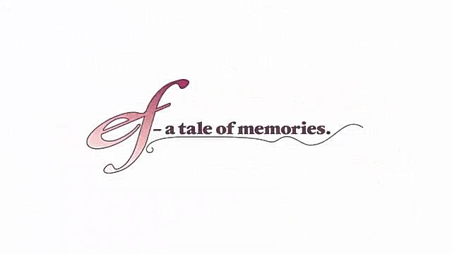
您可以将鼠标悬停于宫格图片上以显示图片说明。
补序
该企划原本定于2024 年 12 月发布，但由于各种原因拖延至今。认识了动漫评测博主Xeonzilla后，我想，这个系列不能继续搁置下去了，现在把它发出来，还有机会得到专业人士垂阅，何乐不为？
于是我重新捡起这篇残稿。相隔数月，对这部作品的印象多少有些淡了，不过幸而在去年我就已经搭好了文章的大致框架，否则，对于一篇概述性质的文章而言，续写必须要再完整地重看一遍原片，这样写作进度又会被拖慢。
前言
我最开始接触《ef》是从它的原作游戏的 OP 开始的（就是上面那个）。MV 高超的质量很快吸引了我，于是，我便找到了这部动画，没想到发现了一处几乎被埋没的宝藏。
意识流的叙事、象征主义的画面、故意扭曲的镜头、诡异的光影、纯文字符号与几何元素的铺陈……这些非常规的表现手法贯穿全剧的每个角落，自然也成为了阻碍其走向大众的一块门槛。
（但是另一方面，同样在画面上使用极其大胆的表现技法的《魔法少女小圆》却大获成功。两者境况的鲜明对比也是一件非常有趣的事情。）
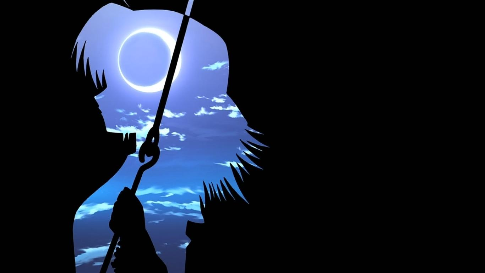
本作采取了同样不多见的群像剧形式，通过三条线路由线到面地编织出整个音羽。这种叙事结构导致一开始观众难以跟上故事节奏，难以追踪剧情的脉络。但是，一旦各条原本彼此分隔的线汇聚到一起，展现出故事的全貌、揭露所有的矛盾时，所产生的震撼感是难以形容的，也是其他叙事方式所不能比拟的。
得益于新房昭之的得力弟子大沼心在画面表现上的神力，本作的情感表现极富张力。借助不寻常的画面营造不安感，借此埋下“心理伏笔”或强化矛盾，是本作的惯用手法；意识流的运用具象地外化了人物内心的冲突，在某种程度上来说，这种反现实主义的表现反而更能令观众身临其境与角色同频共振。
复看这部动画才能发现许多第一次观看时忽略的或注意不到的安排和细节，才能真正领会到制作组在画面表达上独运的匠心。大多数影评更多是在讨论剧情和感悟，我很少见到有对这部动画的表现手法和镜头语言进行分析解说的。这部动画使用的表现方式之前卫，理应有更多的人展开分析其中的分镜和手法，但现实却恰恰相反。我想试图通过逐集逐帧的解说形式，以镜头画面（分镜）的解析为主线，分析本作使用的大量特殊画面隐含的意义和在情节推进方面的作用，一方面填补该番剧影评在这方面的空缺，另一方面也是满足个人的心理：我非常青睐这种先锋的表现手法，也希望能够粗浅地在技术层面上深挖动画分镜中特殊安排的美学和叙事蕴意。
《ef》能够拥有摄人心魂的魅力，与它充满张力的表现方式是不可分割的，甚至可以说，不弄清它的镜头语言所传达的意境和象征，就不可能对这部作品传递的思想拥有完整的认识。我会尽量给出在我能力范围内最趋完美的呈现。本人不是影视专业科班出身，若有不尽人意之处还请各位不啬赐教！
综述
本章对动画情节的重要要素和表现手法进行简要的阐述，在后续各集的逐帧分析中，还会作出具体详细的分析。
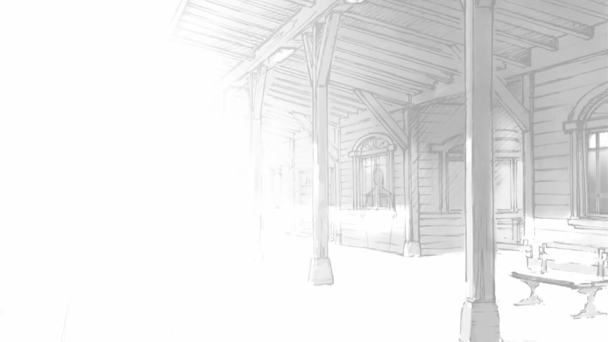
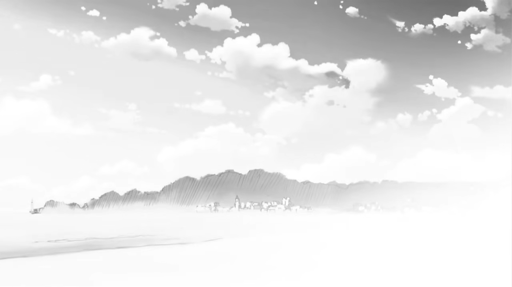
《ef》系列分为两部，而这两部以一种独特的方式相互连结。在故事的时间顺序上，第一部在第二部之后。私以为，将两者联系起来贯穿全系列的要素如下——
传承
“传承”在第一季中少有直接的体现，直到第二季才会完整地展现出来。音羽学院的天台钥匙，高高飘扬的纸飞机，地震的残垣，甚至是音羽镇本身，都是传承的意象，凝聚着两代人的连结。可以说，传承为整个故事打造舞台。
除了视觉意象外，插曲《A moon filled sky》也贯穿了两季故事，被称作该系列“灵魂歌曲”。
羁绊
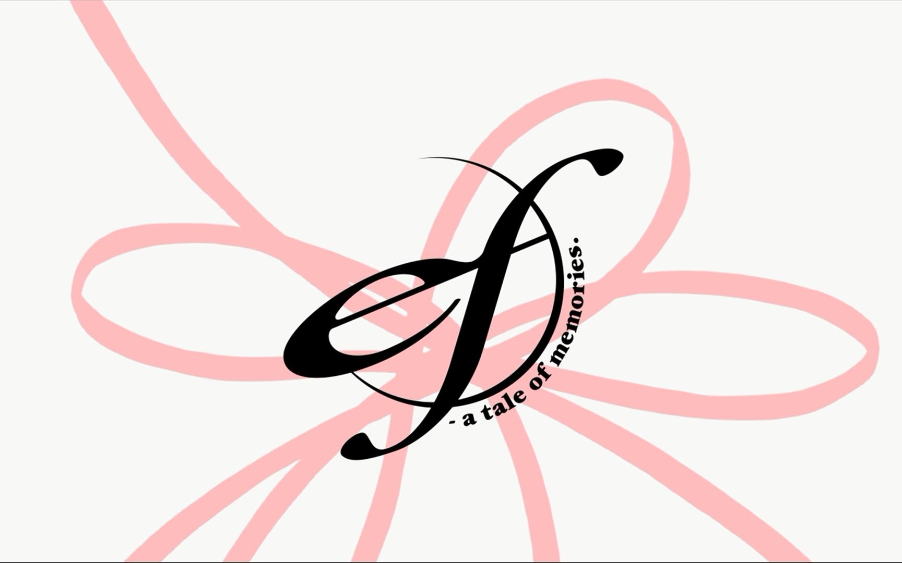
羁绊是《ef》的重要主题。在成长的阵痛和命运的无情中，是羁绊维系着他们前进的步伐，也正是羁绊推动着他们做出行动，连接起偶然和必然，最后创造童话般的奇迹。
爱
作品主要体现的爱有两种：世俗的情爱和神性的博爱。前者是故事的主线，是羁绊发生的根源和联系的内容；后者则集中体现在雨宫优子身上，在第一季中，她作为天使守护着日本的音羽镇，助推着主人公们的成长。
信仰
教堂是动画中经常出现的地点，作品中许多地方也传达出浓厚的宗教神秘感。但是，其宗教元素是神性和信仰的象征，尽管雨宫优子的博爱的确是出自基督教的精神，但这不代表这个故事遵循基督教寓言传说的图式。
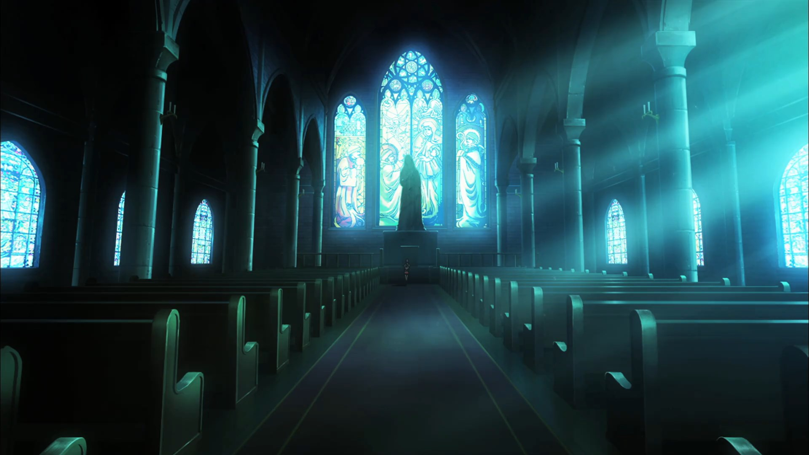
教堂本身是一个抽象的文化符号，在剧情中承担两个任务：为主角们指点迷津，让火村夕有地方耍酷。教堂所承担的信仰，则意指博爱、守候，以及对奇迹的信念。正是怀着创造奇迹的信念，故事角色们之间的纽带才得以存续，抵抗命运的洗礼。
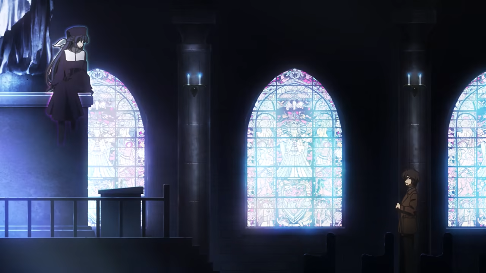
奇迹
动画借火村夕和久濑修一之口传达了一个观点：世间不存在从天而降的奇迹，能产生奇迹的只有人的行动，如果什么都不做，则什么也无法改变。
从漂泊无依到重获归属，从踌躇逃避到勇敢面对，从离群求索到寻得真色，从犹疑自缚到和解释然，从茫然无措到发现梦想，从失去自我到重获新生，故事的每一位主人公，都怀有改变现状的信念，都在创造奇迹。
五个要素层层递进，构成情节感染力的源泉。
在画面表现上则运用了这些手法：
画面布局
一些镜头有意留出大量黑幕，或者做出奇怪的剪切，把画面放在出人意料的地方。动画使用这种方式向观众传达某种情感，或者强调某种意象，有或者是运用这种方式“抹除”画面主体，突出一种空间感觉。
我们以第一集的一些截图为例。P1 强化了一种“窥探感”，眼睛和摄影机取景框画面的相互切换，暗示堤京介一线的主题：摄影。P2 是广野自行车的车轮，这是一个转场，强调了“自行车”这一道具的意象（承载、追赶、前进，后续在景线频繁出现）。P3 隐去了人物几乎所有的部分，只剩下眉毛和眼睛（且镂空了，透出背景的星夜），用一个简单的侧目表达广野对宫村态度转变的一点惊奇。P4—5 用有意为之的怪异画面安排凸显进入教堂时感官上空间的宏大感，渲染出神秘与茫然的氛围。
对人物的特写有时也会变得奇怪，例如对面部特写时不展示整张面孔，仅仅呈现某个器官。代表性的体现就是嘴部，有时会出现全屏只有一个嘴巴的镜头；另外就是眼睛，通常不占据全屏，如上图所示。
另外还有最为人称道的第七集宫村宫子爆发前的一段“漫画格”式的画面安排，堪称用最简约的方式传递了最强烈的孤寂感：相互分离的物件描写，大量的静止画面或静物描写，将宫子内心充斥的空虚与不安以最直击人心的方式展现了出来。
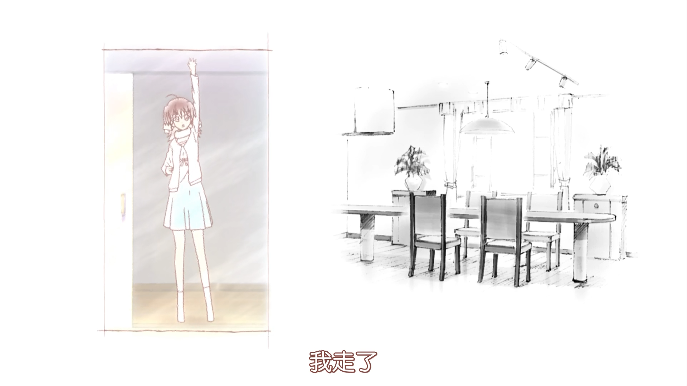
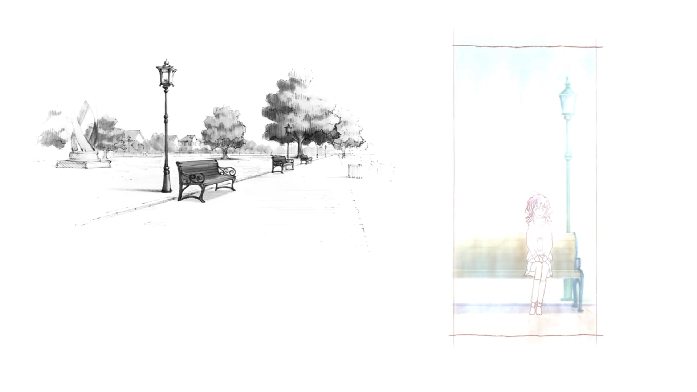
黑白的、静止的部分是“地点”，彩色的、活动的部分则是宫子。画面通过漫画格的形式，有意割裂人物与场景的关系，目的就是造成极其鲜明的对比：期盼着约会的宫子内心充满喜悦，但是，家和公园却是一片死寂，她周遭的环境并未对她的兴奋与期待作出回应，并没有因为她对爱的渴望而表现出善意，使得她发现自己的一切努力最终又化为了泡影——这也是宫子崩溃的根源。
异常透视
不寻常的光影，有意为之的鱼眼镜头，等等。在这部动画里，摄影不再以遵循现实主义的构图为标杆，而是着重强化画面的象征意味，甚至不惜打碎常规的空间关系。
P1 是第一集纮与宫子初遇的一个情景，诡异的光影分割了画面。P2—3 是千寻与莲治道别的剧情画面，虽然 P2 展现两人的距离很短，但在动画中，实际上莲治应当站在阁楼门前，与天台另一端的千寻仍有很远的距离（从千寻抛出日记残页后莲治的奔跑追逐可以印证）；P3 则有意使用了扭曲的视角场和逆光拍摄，强化了压迫感。P4 中全景天空盒子在本作经常出现，用于构造宏远的画面意境。
此外还有画面的重新着色，例如，剧情前期宫村宫子眼中的世界是黑白的。
后现代式表达
在异常的拍摄之外还有更加出格的演出表现，甚至完全舍弃了常规的空间构图，将画面主体元素或要突出强调的对象单独抽象出来。最常见的是对人像的特殊处理。
几何元素、物件的组合也能起到独特的视觉效果。
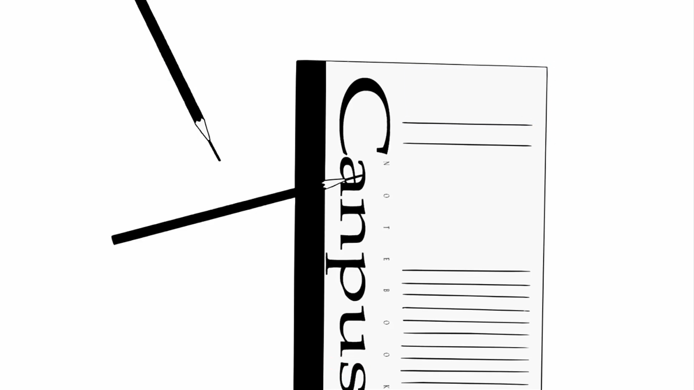
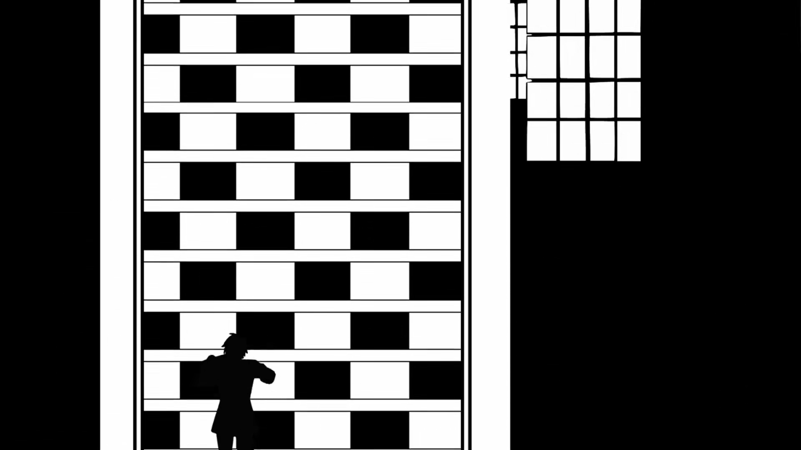
还有一个容易被忽视的点，就是本作会插入一些纯色的帧，不同颜色意味着不同的情感。
甚至还能更进一步，舍弃具象的图形元素，仅仅使用文字符号。不仅文字的内容可以表情达意，文字的排布本身也可以表情达意，但通常会表现出疯狂的、极具压迫性的感受。最经典的画面就是第七集的这个镜头。
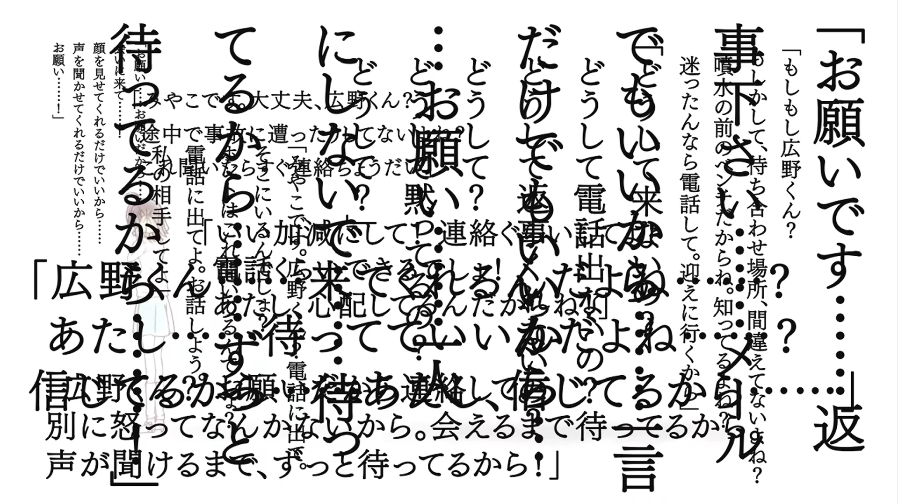
当然，不光高潮部分会使用密集铺陈的文字符号渲染不安与焦虑感，纯文字的镜头还有很多，例如这个“要删除吗”，没有任何方式能比这一系列纯文字镜头更能表现宫子内心的恐惧，并且通过这一系列诡异的分镜，这种恐怖感甚至能够渗入屏幕外的观众心中。
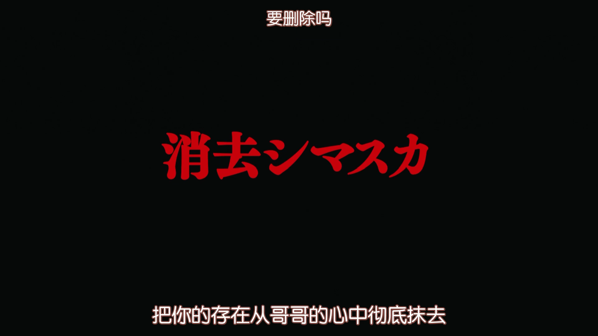
另外，角色说的一些关键的话也会以纯文字镜头形式展现。
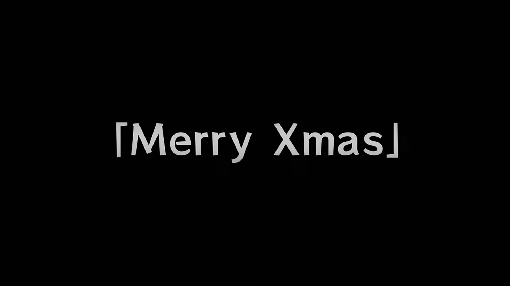
在本季和第二季中，纯文字镜头也被用于为动画“分节”。在第一季，小节的汉字标题（及其假名注音）是对该小节主题的概括。汉字与假名的巧妙关系也值得推敲，我们将在后续的各集解说中详细展开。
这些非传统手法的运用为整部作品蒙上了一种超现实的色彩，同时直接破坏了观众对动画这一艺术形式呈现形式的期待和固有印象，以一种近乎诡异而恐怖的方式将观众和角色们一同卷入愈陷愈深的情感漩涡中。
关于作品
原作和改编
原作为日本美少女游戏公司 minori 出品的视觉小说游戏。作为该社第五部作品，《ef》游戏取得了极高的成就。2007 年 10 月入围《电击G’s magazine》举办的日本前五十名最佳美少女游戏排名的票选活动，在入围的 249 款游戏中获得 11 票而成为第 23 名。
minori 在 galgame 业界以其高水准的开幕视频闻名，最鲜明的特征就是著名的“minori 旋转”。音乐的高潮配合画面的震撼演出无疑给每一个观众都留下了深刻印象。此外值得一提的是，该作游戏 OP 视频制作有新海诚参与，仅仅从本文开头插入的视频即可看到许多熟悉手法和风格的影子，例如闪烁黑幕+抽帧（《秒速五厘米》片尾）、长（焦）镜头天空（《你的名字》），等等。
我们要讲的动画由大名鼎鼎的 SHAFT 社负责制作，大沼心导演，新房监修。（四年后由该社制作的《魔法少女小圆》开始放送）音乐则是老熟人天门和柳英一郎负责。剧情上存在改动，有一些原创情节。不过作者并没有游玩过原作游戏，所以并不能对比分析（这也不是本系列的重点），还望见谅。
剧情的改编也是该作争议点之一。原作的三线实际上被削减为 2.5 条线，景-京介线被半合并入宫子-纮线，直观上导致了景线人物塑造的欠缺，最严重的后果莫过于堤京介的人物形象不够丰满，其次，一些改编场景也为新藤景的风评打了折扣。相较而言，独立性更强的千寻-莲治线无疑最为出色。
此外，独特的演出风格成为了另一个争议点。意识流的风格，反传统的画面表现，的确提高了受众门槛。
除了富有穿透力的画面表现外，制作对一些细节格外上心，最知名的莫过于随情节发展而变化的片头动画。OP 每一次的改变，线条遮挡关系、颜色变化等等，都有其暗示意味，往往默示了本集剧情。这一点在第二季尤为突出。或许是由于第一季 OP 变化幅度很小（直到最后一集大变），似乎很多人并未注意到制作的小设计。
为什么搞这种风格？
今年（2025）六月 11 日，大沼心接受 Febri 访谈，解释了采取这种尝试的原因：
そうですね。かなりピーキーな映像が多いのですが、当時はこういった試みを前向きに受け止めてくださる方が多かったと思います。デジタル技術の発展もあって、全体としては写実的でリアルな絵作りへと移行していた時代でしたけど、一方でそれを窮屈に感じる人たちもまだたくさんいて、僕もそのひとりだったんです。それこそ子供の頃に衝撃を受けた『ガンバの冒険』は、パースを無視するのも当たり前だし、画面がとてもデザイン的じゃないですか。絵がうまくなりたいと思ってアニメーターになった僕ですけど、リアルタッチな絵ばかりを描いていると「これって本当に面白いのかな？」と思うこともあったんです。幸いにも僕の師匠に当たる新房（昭之）さんも出﨑（統）作品がすごく好きで、そういう自由度の高さを認めてくださる方なので、そこはうれしかったですし、僕もこの作品で突き抜けたいなと思ったんですね。
是啊，确实有不少风格相当“极端”的画面，但我觉得在当时，有很多人都能积极地接受这样的尝试。尽管随着数码技术的发展，整体趋势正逐渐转向写实、逼真的画面风格，但与此同时，也仍然有不少人对那种风格感到束缚，我自己也是其中之一。比如说我小时候深受冲击的《Gamba 的冒险（ガンバの冒険）》，它完全无视透视法，这在当时是理所当然的，而且画面非常具有设计感。虽然我是因为想把画画得更好才成为动画师的，但当我一直在画那些写实风格的作品时，有时也会怀疑：“这样真的有趣吗？”幸运的是，我的老师新房昭之先生也非常喜欢出崎统的作品，他是一个能欣赏那种高度自由表现方式的人，这对我来说是件非常开心的事。我也因此下定决心，想在这部作品中打破常规、全力一搏。（AI 翻译）
此外，新房的影响也“功不可没”。
我个人喜爱这种演出风格，也恰恰如此：动画作为靠画笔呈现画面的艺术形式，天生就比需要在现实世界“拍摄”的真人影片多出一份自由，画面表现的自由。自诞生起，漫画和动画都以其夸张的形象取悦世人，这种夸张产生的观感效果是真人摄影所难以比拟的，也是真人影视制作难以模仿的。趋向写实和逼真，一板一眼地遵照现实世界的光学原理构建画面，或许是这个行业成熟的表现，但是这种发展是否又给动画这种艺术形式加上镣铐？
私以为，画还是应当有“画”的样子；既然是“画”，悖离物理和几何又何妨。或许，这种“极端”的风格，恰好是回归动画原点的再探索。
系列文章
（施工中……）